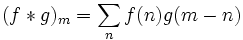
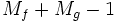
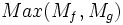

Faltung ist ein mathematischer Operator, der ein Signal mit einem anderen Signal mischt, wobei auf das letztere normalerweise als Antwort Bezug genommen wird.
Faltung wird häufig mit einem * bezeichnet. Angenommen f ist das Eingabesignal und g ist die Antwort. Und nehmen wir weiter an, Mf und Mg bezeichnen ihre Längen. Ihre Faltung wird definiert als:

Von beiden, f und g, wird angenommen, dass sie sich unendlich in beide Richtungen erweitern können, während die Eingaben tatsächlich immer endliche Sequenzen sind. Wenn alle Datenpunkte außerhalb des Eingabebereiches als Nullen sehen, wird die Faltung als lineare Faltung bezeichnet. Alternativ wird die Faltung als zirkuläre Faltung bezeichnet, wenn die Datenpunkte außerhalb des Eingabebereiches als periodische Wiederholung der Datenpunkte innerhalb des Eingabebereichs (die Perioden des Signals und der Antwort sind die gleichen) zu sehen sind. Die Länge der Ergebnissequenz in Origin für eine lineare Faltung ist

Für eine zirkuläre Faltung ist die Länge der Ergebnissequenz
